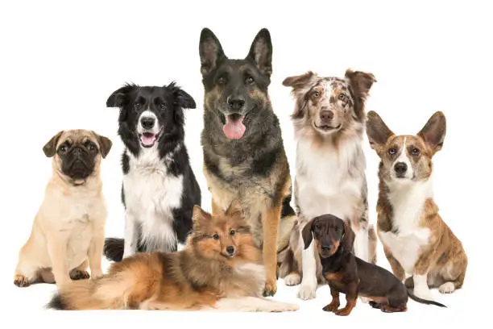
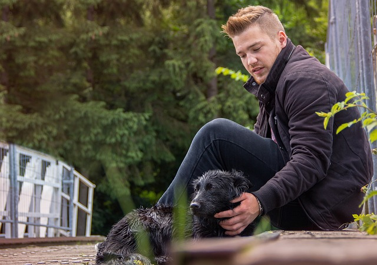

Home page
Home
About
Contact

Fig.1 - The Most Beautiful Dog Breeds
Dog
The dog or domestic dog is domesticated descendant of the wolf, characterized by an wpturning tail.
The dog derivated from an ancient, extinxt wolf, and the modern grey wolf is the dog's nearest living relative.
Care
Lok after and provide for the needs of.

Back